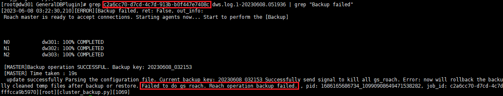

In GaussDB (DWS) 8.1.3, a backup job fails to be executed when the client is installed on the production host and an independent physical server, and a message is displayed indicating that the Roach command fails to be executed.
After data backup is complete, the upload process is started before the GaussDB (DWS) backup process exits completely. As a result, service processing conflicts.
cd /opt/DataBackup/ProtectClient/ProtectClient-E/slog/Plugins/GeneralDBPlugin/
Failed to do gs roach. Roach operation backup failed
Example:
